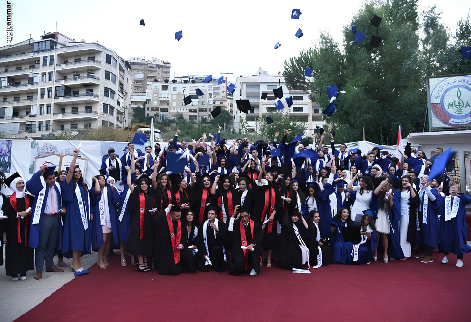

Academics at MAOSS
A rigorous curriculum that prepares students for higher education and future careers grounded in critical thinking, scientific inquiry, and humanistic values.
Overview
High School Program
At Maroun Abboud Secondary School (MAOSS)-Aley, the High School program is designed to prepare students for higher education and future careers through a strong academic foundation, critical thinking, and personal development.
Pathways
Academic Tracks
Students in the High School section follow structured academic pathways tailored to their interests and career aspirations.
Track
Scientific Track
Focused on Mathematics, Physics, Chemistry, and Biology to prepare students for scientific and medical fields including engineering, medicine, pharmacy, dentistry, and life science research.
Track
Literary Track
Focused on Literature, Languages, Sociology, and Philosophy for careers in education, law, journalism, humanities, and the social sciences.
Goals
Learning Objectives
Our High School program aims to develop well-rounded students equipped for academic success and lifelong learning.
Official Exam & University Preparation
Prepare students for official examinations and university admission with a rigorous curriculum aligned to national standards.
Analytical Thinking & Problem Solving
Develop analytical thinking and problem-solving skills through inquiry-based learning and real-world applications.
Research & Independent Learning
Strengthen research and independent learning abilities, empowering students to take ownership of their education.
Trilingual Communication
Improve communication in Arabic, English, and French preparing students for a globalized academic and professional world.
Discipline, Responsibility & Leadership
Encourage discipline, responsibility, and leadership through structured programs, student councils, and community engagement.
Collaboration & Civic Engagement
Foster teamwork, collaboration, and a sense of civic responsibility through group projects and community service initiatives.
Methodology
Teaching Approach
We use modern teaching methods that engage students and foster deep understanding.
Interactive Learning & Digital Tools
Classrooms are equipped with digital technologies that make learning interactive, engaging, and relevant to the modern world.
Practical Labs & Experiments
Science instruction is reinforced with hands-on laboratory work, allowing students to observe, experiment, and draw conclusions.
Continuous Assessment & Feedback
Regular assessments, quizzes, and constructive feedback help students track their progress and identify areas for growth.
Group Projects & Presentations
Collaborative projects and presentations build teamwork, communication, and presentation skills essential for university and career success.
Beyond Academics
Student Development
Beyond academics, students are encouraged to discover their talents and develop holistically through a wide range of activities.
Sports Activities
Students participate in basketball, football, volleyball, and athletics promoting physical fitness, teamwork, and sportsmanship.
Cultural Events
The school organizes theater productions, music performances, art exhibitions, and cultural celebrations that showcase student creativity.
Competitions & School Clubs
Students are encouraged to join clubs and participate in interscholastic competitions, from debate to science fairs to creative writing.
Enrichment
Academic Activities
Academic activities are designed to enhance students' learning experience beyond the classroom and help them apply knowledge in practical and creative ways.
Hands-On Discovery
Science & Lab Activities
Students engage in hands-on experiments in Physics, Chemistry, and Biology to strengthen understanding and develop scientific thinking.
- Laboratory experiments that bring theory to life
- Scientific observations and hypothesis testing
- Data analysis, graphing, and reporting
Research & Discovery
Educational Projects
We encourage students to work on individual and group projects that build research skills, creativity, and confidence in presenting ideas.
- Research assignments on contemporary topics
- Group presentations with peer feedback
- Creative academic projects across disciplines
Communication
Language Activities
To improve communication skills, students participate in language-focused activities that build fluency and confidence.
- Essay writing and creative composition
- Debates, discussions, and public speaking
- Reading comprehension and literary analysis
Technology
Digital Learning
Technology is integrated into learning to prepare students for the modern digital world and develop essential 21st-century skills.
- Computer-based learning and coding fundamentals
- Online research tasks and digital literacy
- Educational platforms and interactive tools
Excellence
Academic Competitions
Students are encouraged to participate in competitions that promote excellence, challenge their abilities, and celebrate achievement.
- Math challenges and problem-solving contests
- Science fairs and innovation exhibitions
- Spelling, essay, and writing competitions